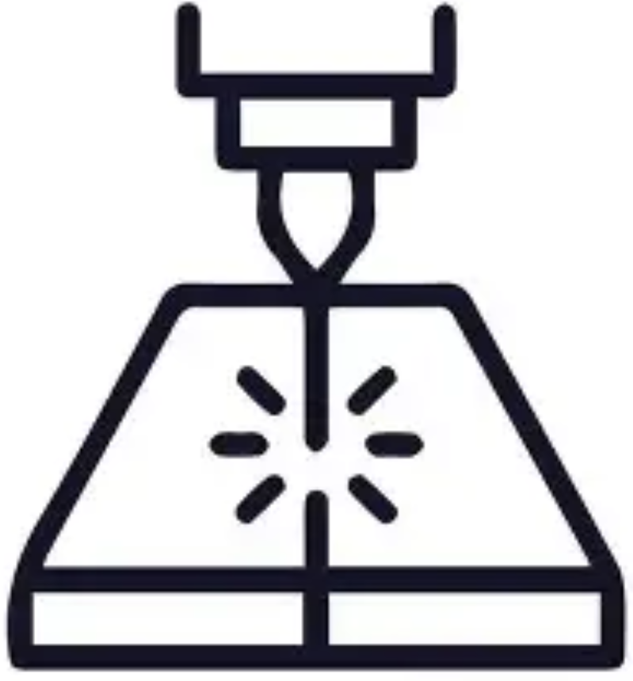
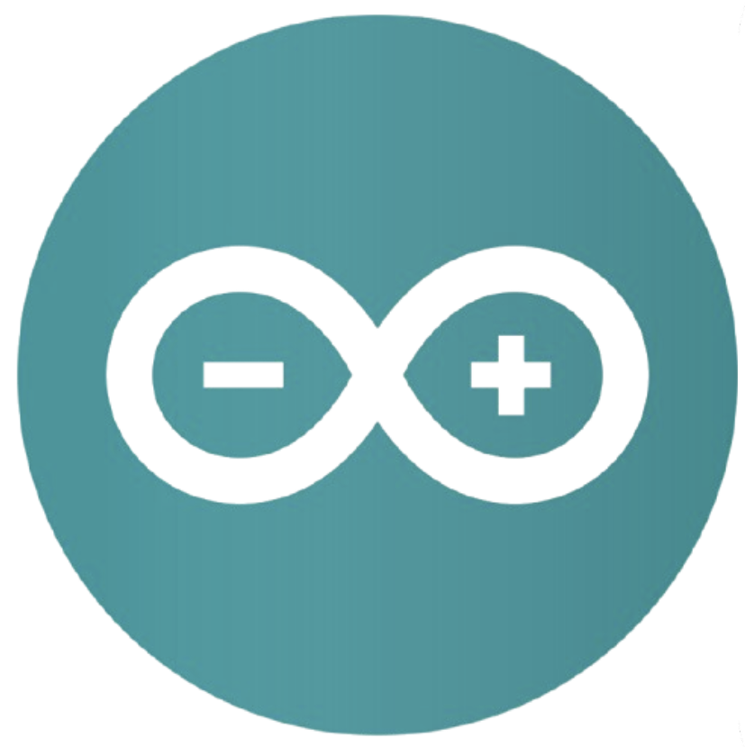
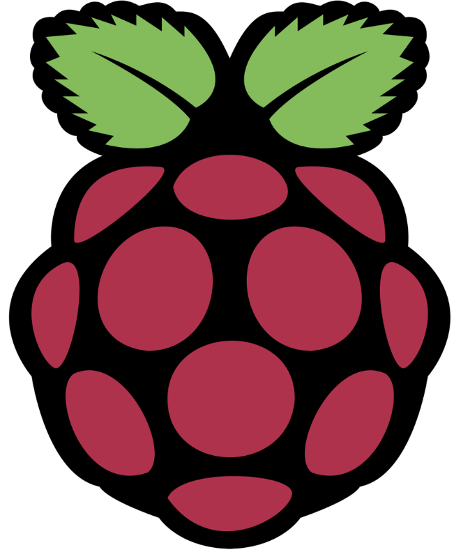
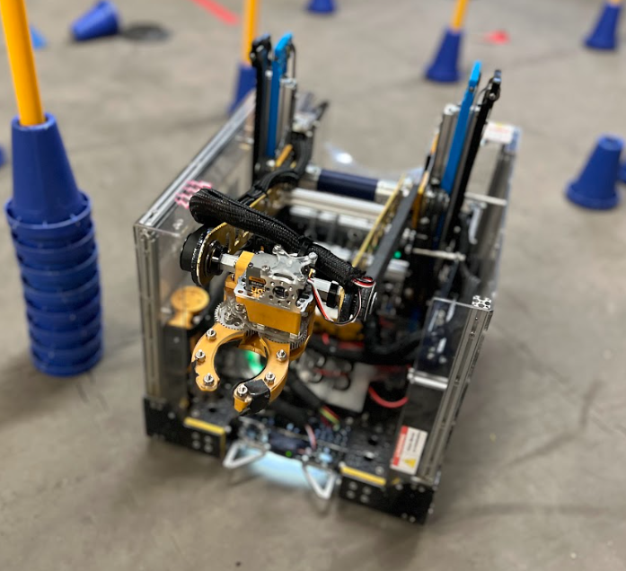
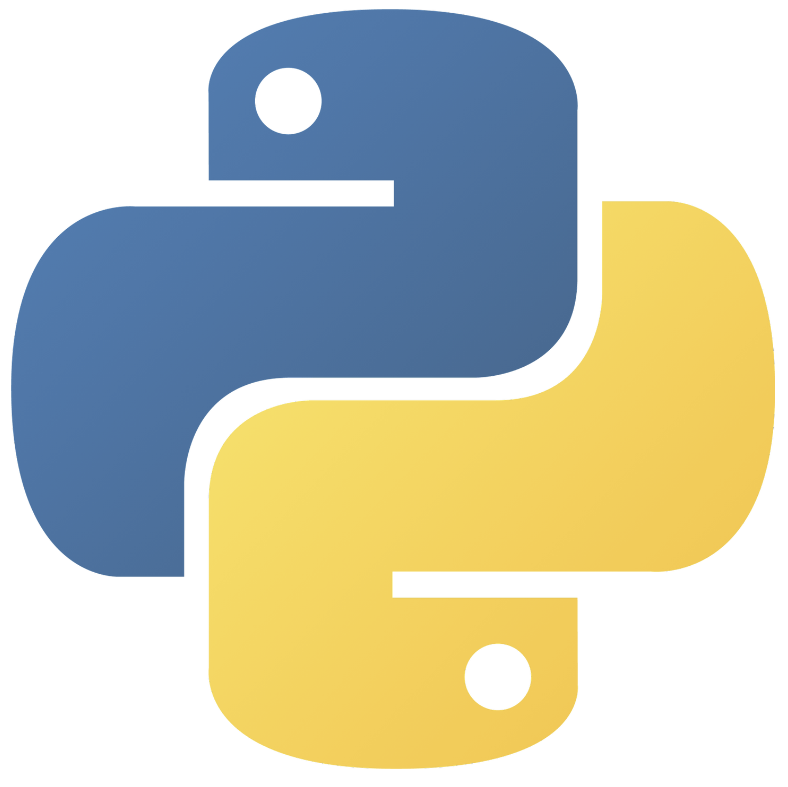
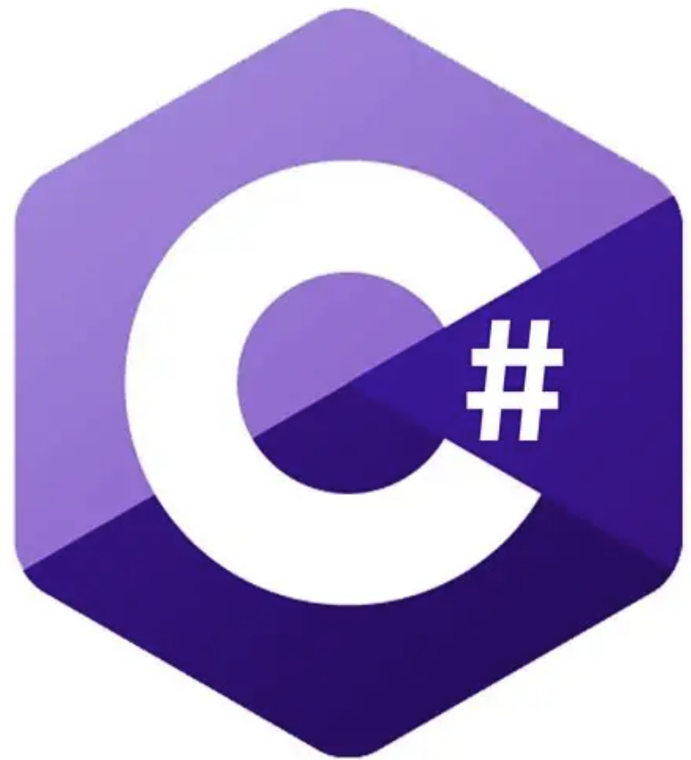
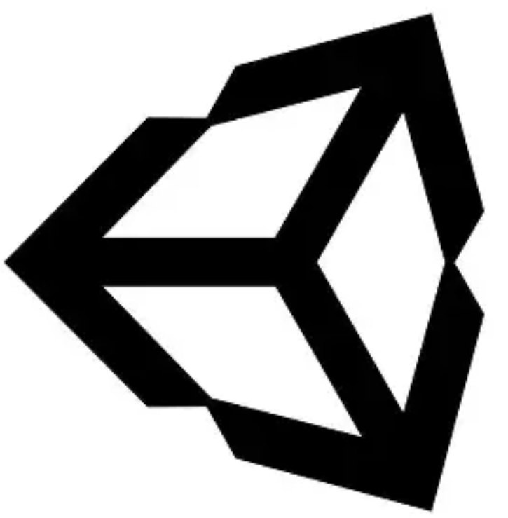
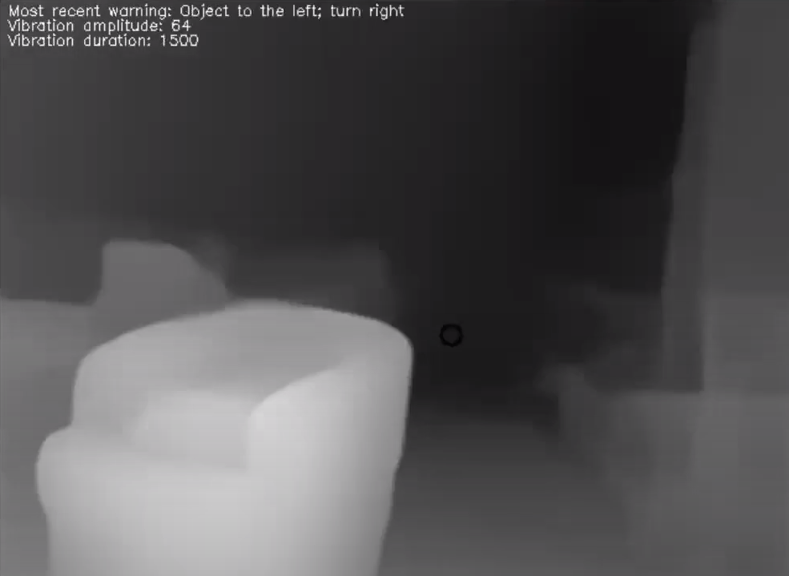
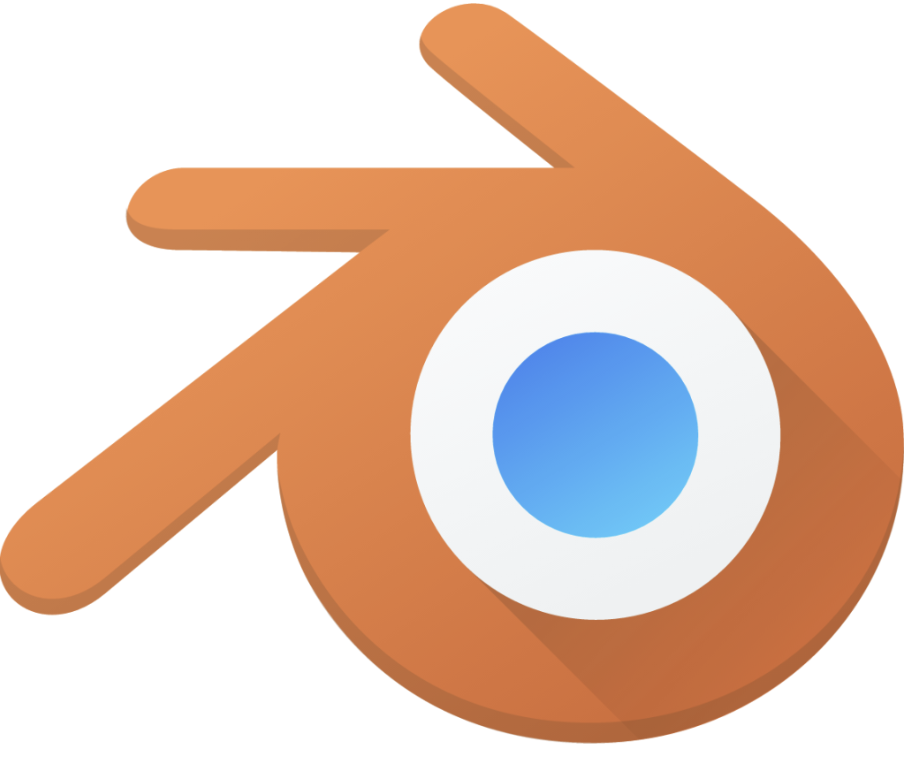
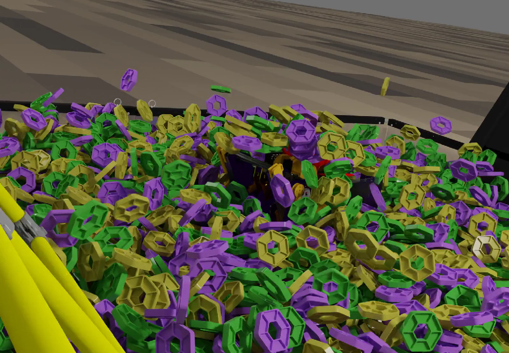

Alex Montello's Portfolio
Welcome to my portfolio! I'm a freshman at Purdue University in Engineering with a passion for mechanical engineering and programming. In particular, I like working with computer vision, robotic manipulation, and design/manufacturing, although my projects and experience span adjacent areas of robotics and engineering as well. The majority of my experience comes from FIRST Tech Challenge, summer programs and internships, and advanced STEM coursework.
Robotics
I focus on building robots that uniquely interact with their environments through sensor integration and intelligent control. In addition to independent projects, I led the design and build subteam of a very successful FTC team.




Programming
Both independently and collaboratively, I apply code to solve complex problems and create interactive tools, often exploring AI, image processing, and 3D challenges.




Games & Renders
I develop experimental and casual games and animations as a way to broaden my skills and explore creative technical concepts beyond more formal projects, often complimenting them.

